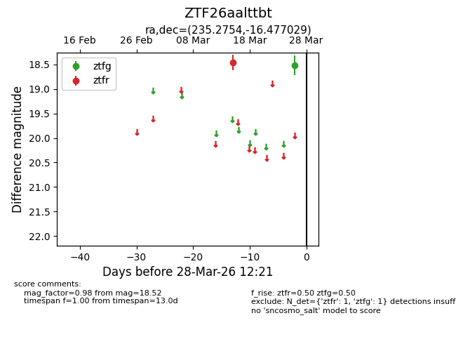
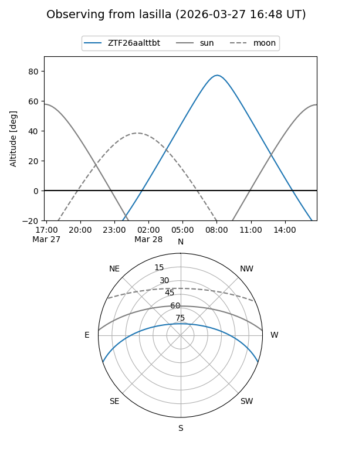
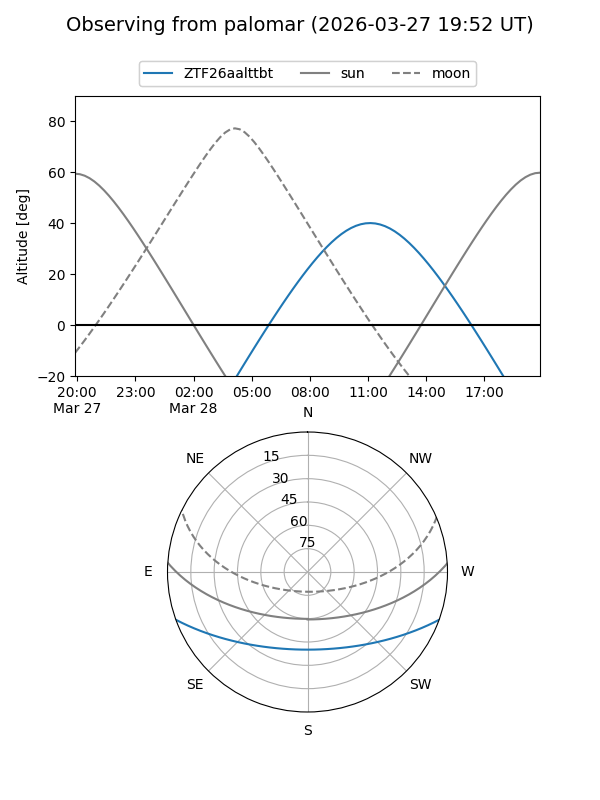

ZTF26aalttbt
Target ZTF26aalttbt at 2026-03-28 12:24
Aliases and brokers:
FINK: link
Lasair: link
ALeRCE: link
alt names
ZTF26aalttbt (ztf,fink_ztf)
Coordinates:
equatorial (ra, dec) = 235.2754,-16.47703
equatorial (HMS+DMS) = 15:41:06.10,-16:28:37.31
galactic (l, b) = (351.2835,+30.04869)
Flags:
Photometry:
last ztfg=18.52, ztfr=18.46
1 ztfg, 1 ztfr detections
Lightcurve

Visibility


Additional plots